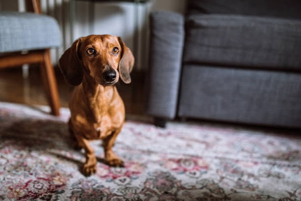

Meet Slinky

Breed: Dachshund
Age: 6 months old
Sex: Male
Location: Ventura, CA
Adoption Fee: $350
Description: Slinky is a friendly puppy who loves to loves to play dress up. She is a little shy at first, but once she warms up to you, she is a bundle of joy. She loves to play with her toys and go for walks.